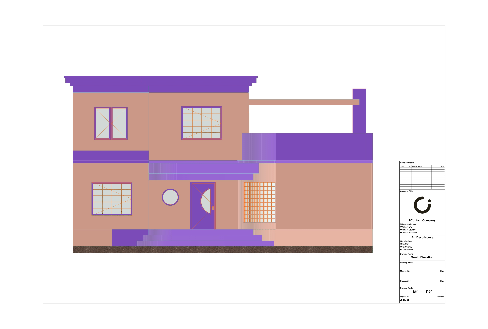
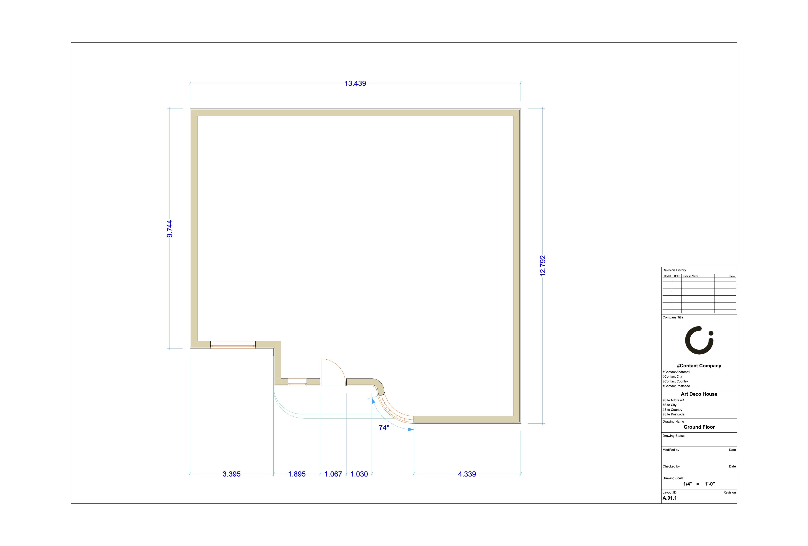
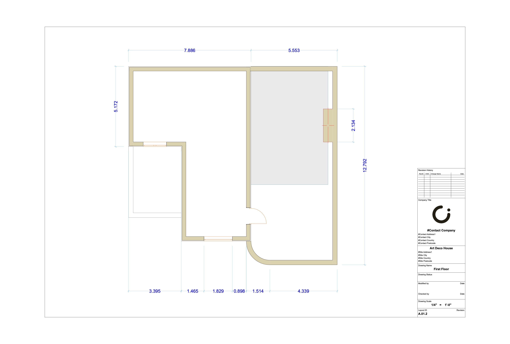
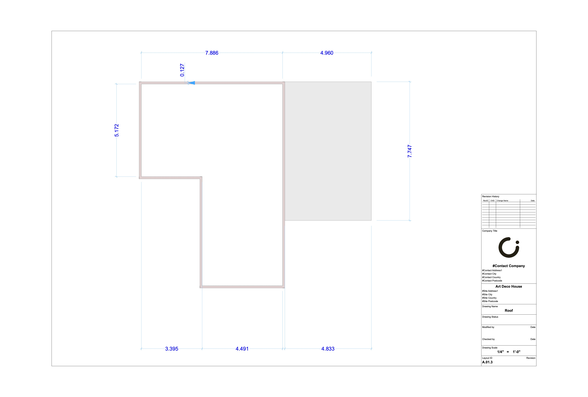
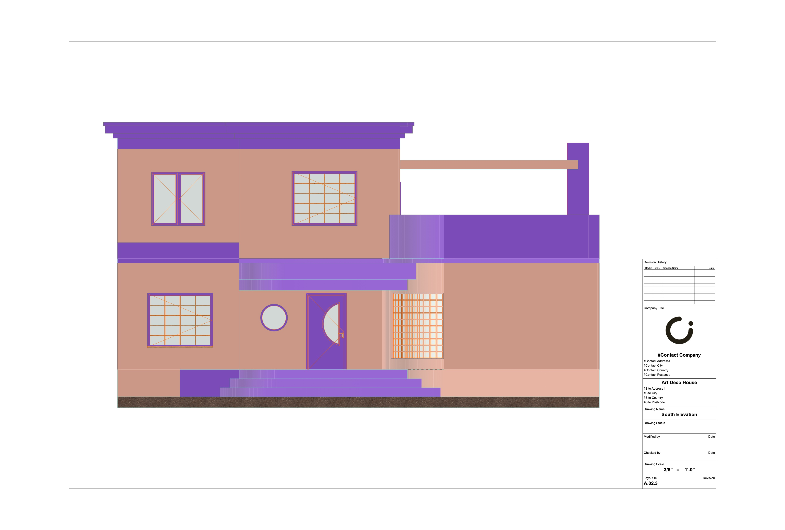
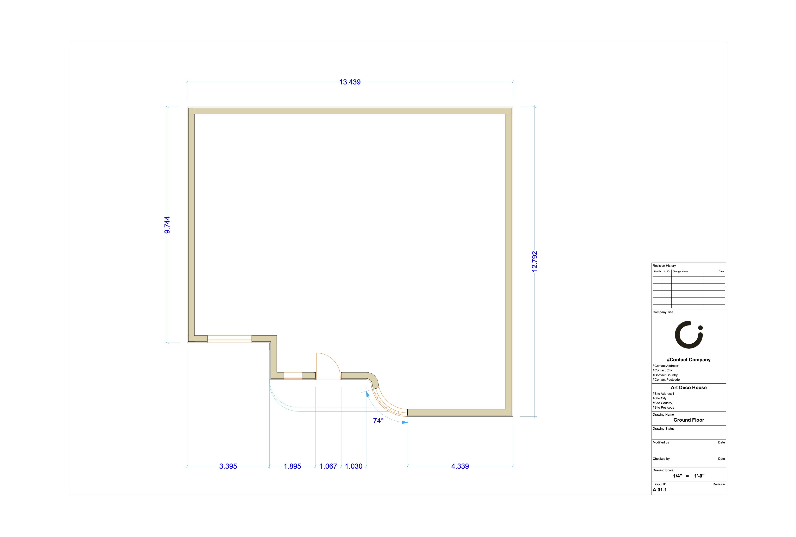
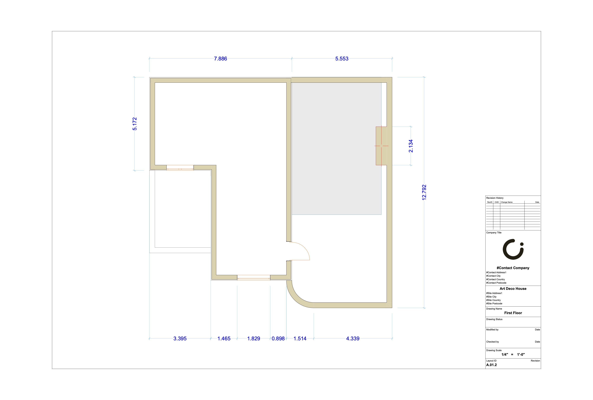
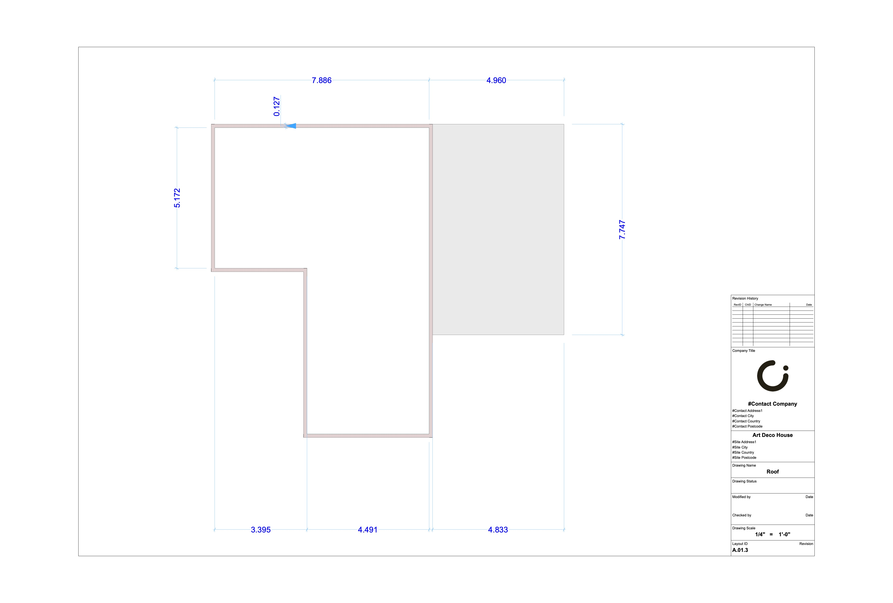

Art Deco House
This layout was drawn from an image of a gorgeous Art-Deco house in Florida. I focused mainly on the exterior architecture, such as the curved facade, and therefore did not include a full floorplan in the drawings.
   
This layout was drawn from an image of a gorgeous Art-Deco house in Florida. I focused mainly on the exterior architecture, such as the curved facade, and therefore did not include a full floorplan in the drawings.
   